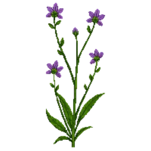

Dead-nettle
Lamium maculatum 'Beacon Silver'

Dead-nettle is a perennial for edging, groundcover, suited to full sun to partial shade and clay, loam or chalk, flowering Apr, May, Jun.
| Type | Perennial |
|---|---|
| Mature height | 20 cm |
| Spread | 45 cm |
| Aspect | full sun to partial shade |
| Foliage | Evergreen |
| Hardiness | USDA 3a-8b, RHS H7 |
| Pollinator-friendly | Yes |
| Pet-safe | Not confirmed |
Where to use it in a border
At around 20 cm, it sits best along the front edge, where a low, spreading habit reads best. Give it about 45 cm of room to spread, roughly 2 to the metre when planted in a drift. It is hardy across USDA zones 3a to 8b and rated H7 by the RHS, so check it suits your area before planting.
It appears in our lists of shade, clay soil, chalk soil, evergreen plants, pollinator-friendly plants.
Border Builder uses Dead-nettle's height, spread, soil, bloom months and companions to place it in a full border plan for your own conditions, on iPhone and iPad.
Flowering through the year
Worth knowing
- Evergreen, so it keeps the border furnished through winter.
- It tolerates a shaded, north-facing spot.
- Its flowers are valued by bees and other pollinators.
Good companions
Plants that share its conditions and style, chosen to complement its place in the border:
- Astilbe 'Fanal'to flower when it does not
- Astilbe 'Visions'to edge in front
- Bigleaf Hydrangea 'Endless Summer'for height behind it
- Blue Windflowerto edge in front
- Bugbane 'Black Negligee'for height behind it
- Camellia 'Professor Sargent'for height behind it
Garden styles
Cottage garden Shade cottage Woodland
Sources
Bloom timing and hardiness drawn from: